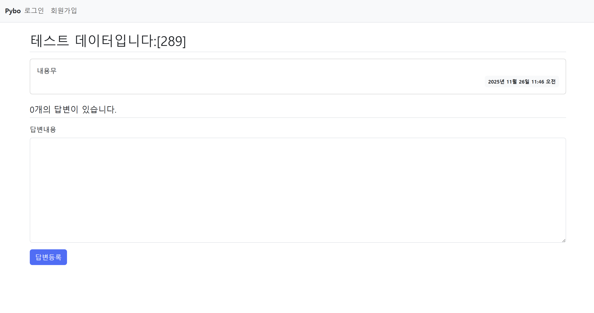
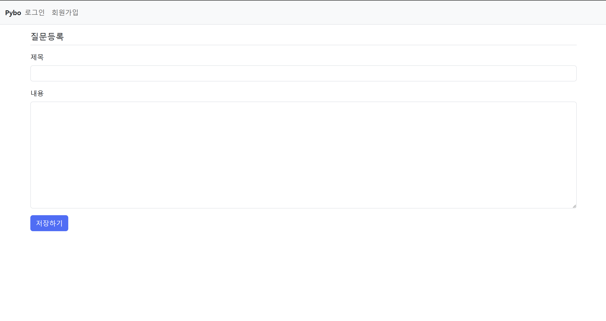
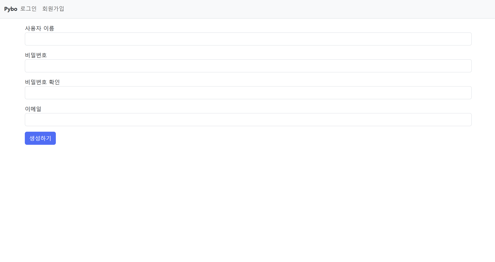

DjangoProject
Django로 구현한 질문·답변 Q&A 게시판 (Pybo)
한양대학교 ERICA 스마트융합공학부 스마트ICT융합전공
웹프레임워크개발 실습
웹프레임워크개발 실습
Django
Python
SQLite
Bootstrap 5
개인 프로젝트
About Project
본 프로젝트는 Python 웹 프레임워크 Django로 제작한 질문·답변(Q&A) 게시판입니다. 사용자가 질문을 등록하면 다른 사용자가 답변을 달 수 있는 구조로, 게시판 서비스의 핵심 흐름인 모델 설계 → 뷰 로직 → URL 라우팅 → 템플릿 렌더링의 전 과정을 직접 구현했습니다. 회원가입·로그인 기능과 목록 페이징까지 포함하여 실제 서비스에 가까운 형태로 완성했습니다.
주요 기능
- 질문 목록 · 최신순 정렬, 한 페이지 10개씩 페이징 처리
- 질문 상세 · 질문 내용과 등록된 답변 목록 표시
- 질문 등록 · 폼 검증(Form validation) 후 작성일시 자동 기록
- 답변 등록 · 질문에 종속된 답변 작성 (POST 전용 처리)
- 회원 기능 · Django 인증 시스템 기반 회원가입 / 로그인 / 로그아웃
Screens
실제 동작 화면입니다.

질문 목록 — 최신순 정렬 · 10개씩 페이징

질문 상세 — 본문 · 답변 목록 · 답변 등록 폼

질문 등록 — 제목 · 내용 입력 폼

회원가입 — Django 인증 기반 사용자 생성
Implementation
앱(App) 단위로 기능을 분리한 Django 표준 구조입니다.
| 구성 | 설명 |
|---|---|
config | 프로젝트 설정 — settings, 루트 URL 라우팅, WSGI/ASGI 엔트리포인트 |
pybo | 게시판 핵심 앱 — Question·Answer 모델, 목록/상세/등록 뷰, URL, 폼 |
common | 회원 앱 — 회원가입 폼, 로그인/로그아웃 라우팅 |
models.py | Question(제목·내용·작성일), Answer(질문 FK·내용·작성일) 모델 정의 |
views.py | Paginator 목록, get_object_or_404 상세, Form 검증 기반 등록 로직 |
templates/ | base·navbar 상속 구조, 질문 목록/상세/폼, 로그인·회원가입 화면 |
Tech Stack
개발 환경
- 언어 · Python
- 프레임워크 · Django
- DB · SQLite
- UI · Bootstrap 5
핵심 기술
- MTV 패턴 · Model·Template·View 기반 구조 설계
- ORM · Django ORM으로 모델·마이그레이션 관리
- 관계 설계 · ForeignKey로 질문–답변 1:N 관계 구현
- 폼 처리 · ModelForm 검증 및 CSRF 보호
- 페이징 · Paginator로 목록 분할
- 인증 · django.contrib.auth 회원 시스템